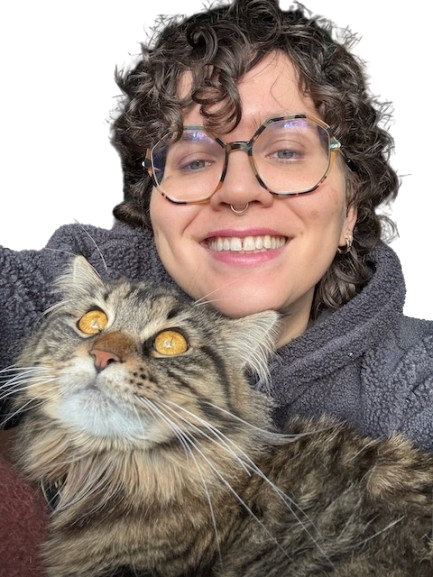

Hi, I'm Flo. I build the systems that connect people, information, and purpose.
Ten years of data and systems at mission-driven companies;
a PhD in theoretical biology, and currently doing an MBA.

Discovery work, a fractional data leader, workshops, or a few hours a month of advice.
What I bring
Starting a data function.I have been the first data hire multiple times, and can help you identify what data infrastructure you actually need.
Getting the numbers to agree.I built a B-Corp's first commercial reporting, pulling finance, sales and e-commerce into one place; then I chaired the meeting where people argued about what they meant.
Finding out if AI is actually useful to you.Most recently: a six-month proof of value for agentic systems at an enterprise client. The brief was to automate one workflow; discovery showed the real opportunity was elsewhere, and so we built that instead; I'm good at telling the difference between what is possible and what is worth doing.
Modelling.Cell signalling for my PhD; then recommendation engines, churn, life-cycle assessments, and NLP in Swahili for an SMS service used by two million farmers.
When I'm not the right person
I'm better at the messy start of a project than the administrative end. I only take on work with a mission I can get behind.
How to work with me
Swimming in chaos.I'm very comfortable with uncertainty and pivoting quickly when plans change. I like big gnarly problems that need complex solutions, and the challenge of figuring out what is good enough.
Queer and neurodivergent.I bring my whole self to work and don't strongly separate personal and professional. I believe diverse perspectives make teams stronger, and I appreciate colleagues who educate themselves and speak up on LGBTQ issues and intersectionality.
I work with AI, openly.I use Claude most days: to draft, to code, and as a thinking partner that pushes back. Anything it touched, I'll tell you. Anything with my name on it, I've read and I stand behind.
Give me all the context.I'm a systems thinker: the more I know about what's happening across the whole project, the more connections I can make. If I don't understand the wider purpose, I struggle to engage with it fully.
Feedback: soon, and prefaced.Start with "I have some feedback…" and give it while it's fresh, otherwise I'll forget what the issue was. And tell me to slow down; I run ahead of my own explanations. I'm working on it.
Talk to me.I think best while walking and talking. I'd rather work through a problem synchronously than in a long thread. Say hello whenever. If I'm too busy I'll say so.
Rabbit holes.Sometimes I hyper-fixate on solving a problem; this can be positive or negative. Feel free to suggest my time might be better spent elsewhere.
Academic
Fun & other things to know about me
Stand-up comedy.An eight-minute routine about my research, performed at the Natural History Museum, the Royal Society Summer Exhibition, and Green Man Festival.
Why aren't all penguins criminals?A project explaining mathematical modelling to 13–14 year olds. 190 lesson packs went out to schools over three years.
A tarot card most mornings.It centres my thoughts for the day and adds some stochasticity. I value it as a forcing function to get out of local minima.
Video games.I'm a massive video game nerd, and have spent over 1,500 hours in Final Fantasy XIV.
My cat Mushroom is my everything.She's 75% Maine Coon and 100% fluff.